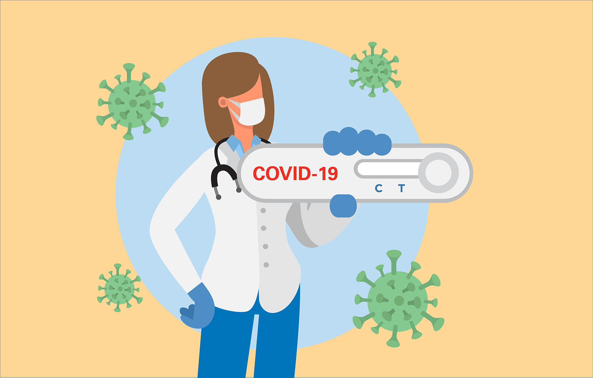

Are rapid COVID-19 tests accurate?
We’ve all felt uncertain at times during the COVID-19 pandemic.Do I have the coronavirus?Should I get tested?Do I need to quarantine?
Rapid coronavirus tests may offer comfort – and convenience – to some, but are the results accurate?We asked Micah Bhatti, M.D., Ph.D., if these tests are dependable and five other common questions related to rapid coronavirus tests.
How do rapid COVID-19 tests work?
There are two types of rapid COVID-19 tests that detect the coronavirus.One type is a sped-up, smaller version of the PCR tests.It’s also molecular-based, so it’s looking for genetic material from the virus in the mucus and infected cells in the sample from the patient.The sample is collected by inserting a cotton swab up the nose or running it along the inside of the cheek.The collected material is then added to a tube of fluid, and that’s what we’re testing in the lab.
The other style of rapid test looks for antigens of the virus, which are proteins on the surface of the virus.The mucus and cells are collected in the same way as a PCR test, but these tests may not require a lab to determine the results.These tests often come as flat, plastic card that contain a test strip.The test strip reacts with coronavirus antigens present in the patient’s mucus sample, and the strip typically changes color to indicate that the patient is positive.
Are rapid COVID-19 tests reliable?
To a certain degree, you’re sacrificing accuracy with speed.By their very nature, the antigen style tests aren’t as sensitive because they require a larger amount virus present to be positive.They can be helpful in rapidly screening symptomatic individuals early in the infection.They can also help to rapidly screen a large group of individuals during an outbreak in a resource-limited setting.Someone with a positive test by this style of test should be treated as infected with COVID-19, but a negative test is less reliable and may need to be confirmed by a more sensitive molecular assay.
The rapid, molecular-style tests can be reliable if a quality specimen is used and if the testing is conducted by properly trained individuals who are performing the test as intended by the manufacturer.This is the exact standard that we provide in the clinical laboratories at MD Anderson.With a sophisticated setup like ours, we’re able to detect the genetic material of the coronavirus, even when there’s only a small amount in the mucus sample.
Are at-home rapid COVID-19 tests dependable?
It would be great for someone who is immunocompromised, like our cancer patients and survivors, to get tested from the safety of their homes.But an at-home rapid test is going to have too many variables for me to feel confident in the result.
First, a good test needs a good sample.Although it’s not painful, swabbing your nasal passage can be an uncomfortable experience.I can’t image that I would be able to do it to myself and come out with a quality sample on my own.
Another thing to consider is the test’s manufacturer.Have they been thoroughly vetted by the FDA and published studies to ensure the test they’re producing is sensitive and reliable?If the test has a high rate of false negatives or false positives, it’s not reliable.
Lastly, if the specimen requires being mailed there’s an added risk.Weather should be considered, as well as if the sample is going to be handled by other people or even flown on a plane.
Recently, an at-home rapid, molecular-style test hit the market, and it eliminates the need to mail out your specimen.Although it’s convenient, conducting a test on yourself can be a stressful process, and you may unknowingly make a mistake.It also still requires you to collect your own specimen.I think more time is needed to see how failsafe these tests can be when performed outside the highly controlled environment of a clinical laboratory.
What types of COVID-19 tests does MD Anderson use?
Because cancer treatments can weaken the immune system, our patients and survivors are particularly vulnerable to coronavirus infection.To protect our vulnerable patient population, our scientists have developed an in-house molecular, PCR-based test that we know is accurate and trustworthy because of our internal vetting process.We use this test with patients coming for outpatient appointments and procedures, as well as our employees.
Patients being admitted to our hospital or being seen in our Acute Cancer Care Center may receive a rapid molecular, PCR-based test that has gone through the same internal assessment to ensure its reliability.The rapid test allows us to quickly isolate and treat patients who may be positive for a coronavirus infection.However, because of the volume of patients that we care for, we’re unable to offer this option to everyone
If I’ve taken a rapid COVID-19 test, what do the results mean?
If you’re experiencing symptoms of COVID-19 and a rapid test result indicates you’re positive, you should take that as an indication you have the coronavirus.You should quarantine and contact your doctor.
However, if you have COVID-19 symptoms and a rapid test result is negative, you should still contact your doctor because you may need to receive a PCR test.Don’t be victim of a false sense of security with a false negative result from a rapid COVID-19 test.
Posted On: 2020-12-04T00:00:00
Posted By: Devon Carter

Content Date: 2020-12-04
Download Date: 2021-04-21
Document ID: L0C04APSY